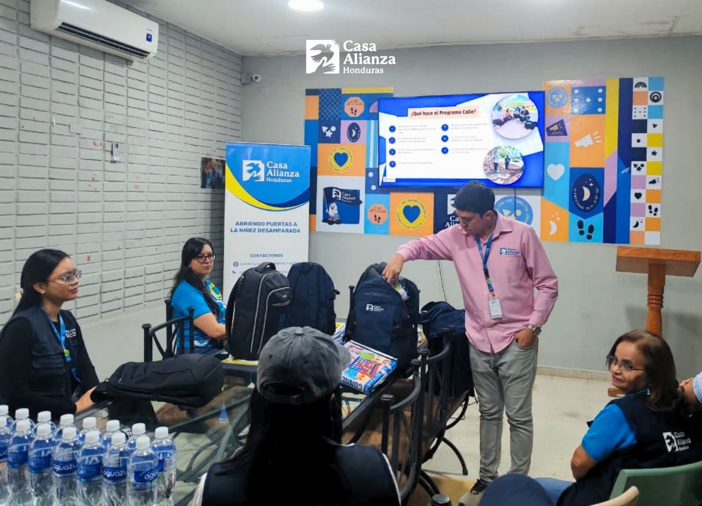
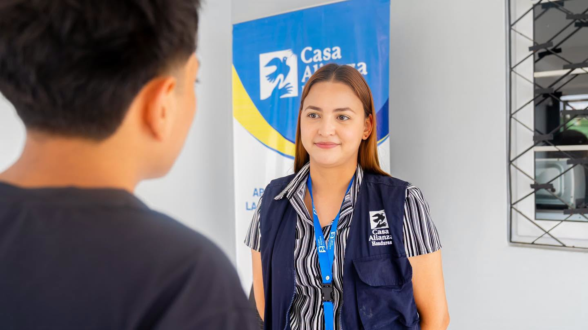
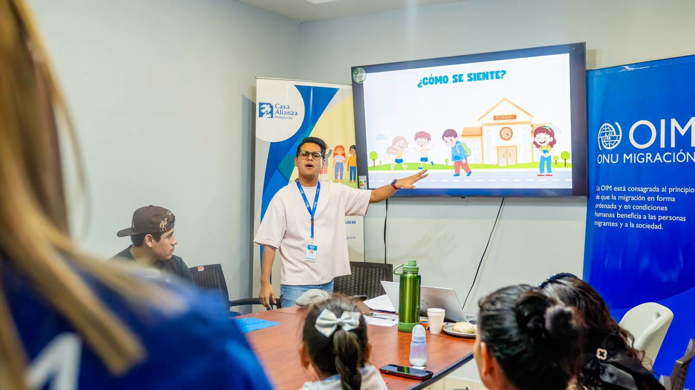

Programa Residencial Mixto
Brinda alojamiento seguro, alimentación, educación y atención integral.
Casa Alianza Honduras trabaja por la protección, educación y defensa de los derechos de niñas, niños y adolescentes en situación vulnerable.
Únete a nuestra causaSomos una organización humanitaria, apolítica y sin fines de lucro dedicada a proteger y defender los derechos de niñas, niños, adolescentes y jóvenes que enfrentan situaciones de violencia, abandono o vulnerabilidad.
Niños y jóvenes atendidos
Años de trabajo en Honduras
Programas principales
Brinda alojamiento seguro, alimentación, educación y atención integral.
Atención especializada para adolescentes sobrevivientes de explotación.
Fortalece vínculos familiares y sociales.

Casa Alianza Honduras presentó una nueva plataforma digital para fortalecer su comunicación.

Publicación institucional sobre la situación de niños y adolescentes en Honduras.

Casa Alianza agradece el apoyo recibido por organizaciones aliadas.
Tu apoyo puede brindar oportunidades, protección y esperanza.
Donar ahora